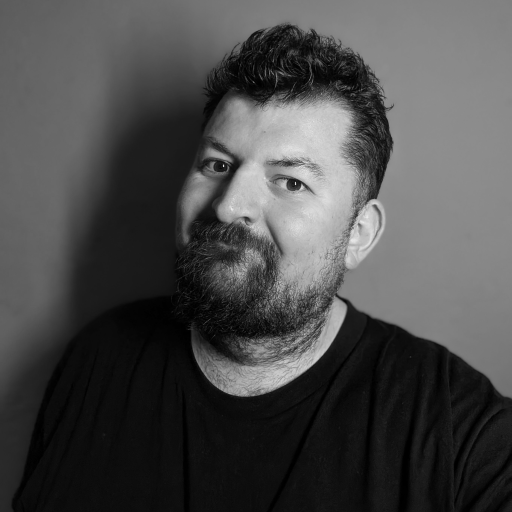
Alec Doran-Twyford
I build reliable, high-scale software and enjoy turning tricky problems into simple, well-tested systems. Currently at Deliveroo.
A bit about me
I'm a Senior Software Engineer at Deliveroo, working on high-scale backend systems. I care about clean, well-tested code, and about the people I build it with — I've picked up a Scrum Master certification along the way and enjoy the team side of engineering as much as the code.
My route in was a little unconventional — a First-class Computer Science degree, a year in Sydney working on VoIP software, and a spell in London food-tech before settling into engineering across public-sector (HMCTS, HMPPS via Solirius), Rightmove and now Deliveroo. It left me with a product mindset I still bring to every system I build.
What I work with
Languages
Backend & Microservices
Cloud & Infra
Ways of Working
Where I've worked
-
Mar 2021 – Present
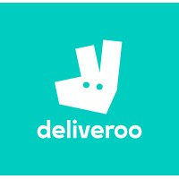
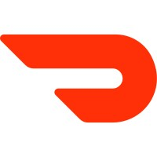
DeliverooSenior Software Engineer (since May 2023) · previously Software Engineer- 5+ years on the Consumer Pricing team — from IPO through profitability to DoorDash acquisition — the go-to domain expert for fees across the organisation
- Built internal tooling that cut fee configuration from days of careful manual checking to minutes, saving significant engineering hours
- Designed and coordinated co-pricing, a core microservice managing fees, benefits & pricing across the consumer journey (home, menu, basket, checkout)
- Now supporting the migration of pricing systems to the unified Wolt / DoorDash / Deliveroo platform, bringing Deliveroo's pricing framework to the wider organisation
- Cross-functional partner to Product, DS, Strategy, MLE & Engineering — stewards the backlog, PR reviews and on-call rota (Rootly) while keeping core repos on the latest libraries
Deliveroo joined the DoorDash group in 2025, following DoorDash's acquisition of Deliveroo.
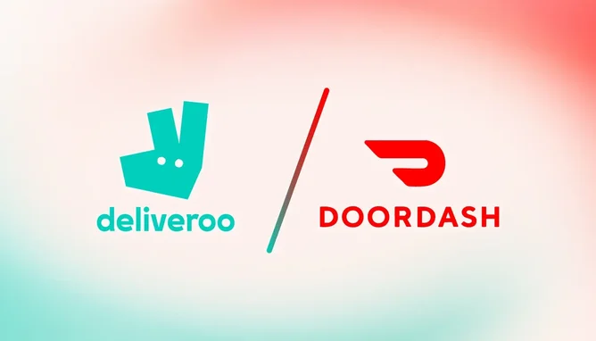
-
Nov 2018 – Mar 2021
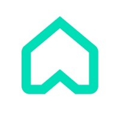
RightmoveSoftware Engineer — Vendor & Evaluate teams- Migrated code from the monolith into microservices
- Upgraded services to Spring Boot 2 and Elasticsearch 6 & 7
- Full-stack work across Java 11, Node.js and React, with Kafka, Docker and Jenkins
-
Sep 2016 – Nov 2018
 Solirius Consulting
Junior Software Engineer — contracted to HMCTS & HMPPS
Solirius Consulting
Junior Software Engineer — contracted to HMCTS & HMPPS- HMCTS Reform: built common components for Document & Evidence Management, also acting as Scrum Master. View my 30+ open-source PRs
- HMPPS: delivered the Strategic Partner Gateway on Java 8, ServiceMix, ELK and AWS
- Java 8, Spring Boot, Postgres, Docker, Terraform, Jenkins and REST APIs
Past work experience (2009–2016)
Before I moved into engineering full-time: startups, a year in Australia, and the retail and hospitality roles that built my work ethic, organisation and customer focus.
-
Feb 2016 – Aug 2016
 Sky
VB Analyst
Sky
VB Analyst- Gathered requirements and worked with stakeholders to refine processes
- Designed and built scalable VBA solutions, introducing better team practices
-
GLEATNov 2015 – Jan 2016Product & Mobile Developer
- Picked up the codebase in days and shipped first features within two, learning JavaScript and Meteor on the job
- Applied lean-startup principles and drove UI/UX improvements
-
Welcome Break × WaitroseMar 2015 – Feb 2016Waitrose Team Leader (Operations)
- Ran the shop floor on shift — planning tasks and breaks, mentoring staff and coordinating product launches
- Owned a store sub-section, analysing sales trends to drive ordering and reduce wastage
- Represented the store at Partnership Council to shape future business plans
-
Food Startup SchoolFeb 2015 – Aug 2015Social Marketing Intern
- Generated leads and partnerships for a London food-tech events startup, running market research and social campaigns
- Oversaw on-the-day operations for events
-
Sep 2013 – Dec 2014
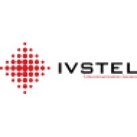
IVSTEL — Sydney, AustraliaTechnical Product Manager & Support Engineer- Owned features for Adaptiv, a Java EE VoIP routing platform (Linux, MySQL, OpenSIPS, Radius)
- Rebuilt the OS image, cutting setup from hours to minutes and removing 98% of human error
-
WaitroseMay 2009 – Feb 2013Senior Customer Sales Assistant
- Nearly four years as a customer-facing partner — the foundation of my work ethic and a lasting commitment to superior, customer-focused service
- Trained partners and managed shifts, planning tasks and breaks for the team
- Full accountability for a store sub-section: analysed sales trends to drive ordering strategy, stock management and reduced wastage
- Represented the store at Partnership Council meetings on future business plans
Where I studied
-
2014
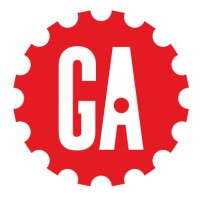
General AssemblyProduct Management (part-time course)- Product discovery, roadmapping, user research, MVPs and stakeholder communication
-
University of Hertfordshire2009 – 2012BSc (Hons) Computer Science — First Class
- Specialised in system architecture and networking; also covered AI/ML, databases and quantum computing
- Cisco CCNA certified through the course
-
Oaklands College2007 – 2009BTEC National Diploma — IT & Business Practitioner (DMM)
- Foundational IT and business skills
Certifications: Certified ScrumMaster® (Scrum Alliance, 2020) · Cisco CCNA (2012)
Things I've built
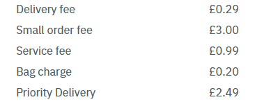
Consumer Pricing & Fees Platform
Problem
Deliveroo's fee configuration required days of careful manual work, and the pricing system needed a scalable architecture to serve fees, benefits & pricing across multiple surfaces.
What I built
Internal tooling that reduced fee configuration to minutes, and co-pricing — a core microservice managing fees, benefits & pricing across home, menu, basket and checkout. Now leading migration to the unified Wolt / DoorDash / Deliveroo platform.
Tech used
Deliveroo · 2021–Present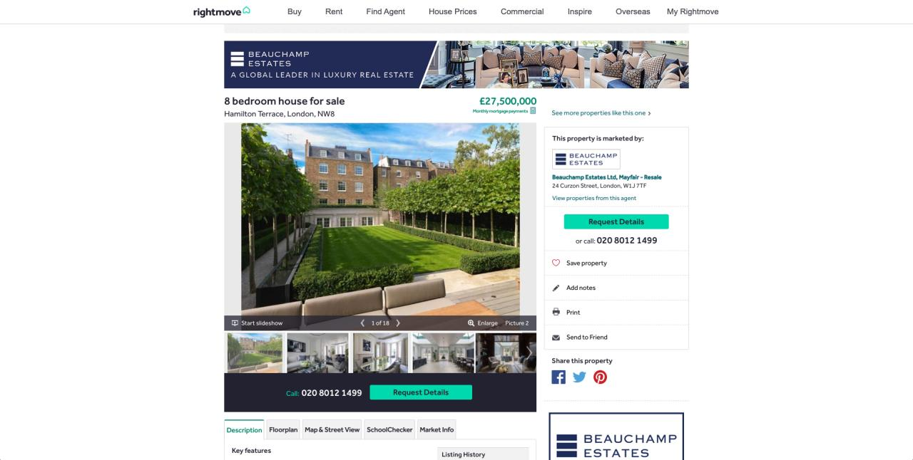
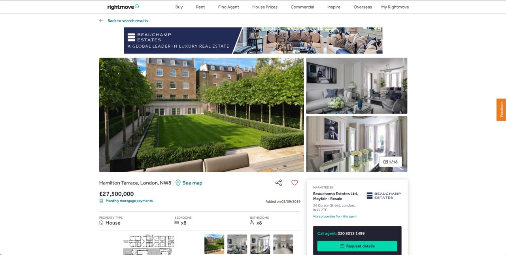
Sold Property Page replatform
Problem
Rightmove's Sold Property Page lived in an ageing legacy codebase.
What I built
Replatformed the page into a standalone microservice, with refactoring, UI work and load testing. This involved building and migrating across several microservices including sold property search, sold property web, property details app, and property details web.
Tech used
Rightmove · 2019–2020HMCTS Reform — Document & Evidence Management
Problem
Courts & Tribunals digital services needed shared, reusable components for handling case documents and evidence.
What I built
As a junior engineer on the Reform programme, I built common components for the platform and acted as Scrum Master.
View my 30+ open-source PRs for HMCTS on GitHub
Tech used
HMCTS via Solirius · 2017–2018Strategic Partner Gateway (SPG)
Problem
HMPPS needed a secure integration gateway for its strategic partners.
What I built
Delivered gateway services as a Java engineer on the programme.
Tech used
HMPPS via Solirius · 2016–2017More on GitHub
Check out my personal and open-source projects, experiments, and code samples.
github.com/alectronic0When I'm not coding
Photography
Food & Tea
Cycling
D&D
Board Games
Giving back
-
GoblinsMay 2025 – PresentCommunity Volunteer
-
Mar 2014 – Dec 2014
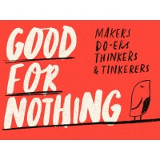
Good for NothingProject Manager · Business & Technical Consultant- Ran hackathon-style social-enterprise projects, providing technical consulting and branding for cause-led founders
Let's talk
I'm open to hearing about new opportunities. The quickest way to reach me is by email — I'll get back to you as soon as I can.
✉️ alec@alectronic.co